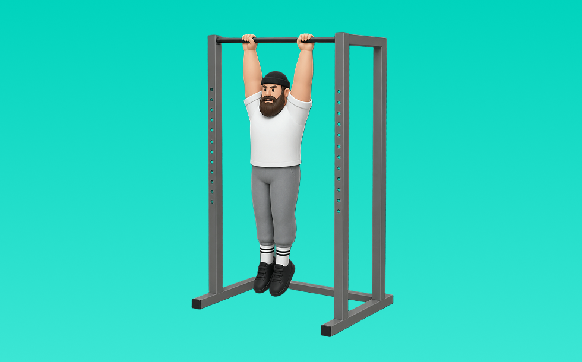

デッドハング

デッドハングとは、自重を使って「ぶら下がって保持する」動作で握力、肩甲帯の安定を鍛える種目です。器具なしで手軽にでき、フォーム次第で負荷調整しやすいのが特徴で、肩をすくめすぎずにぶら下がり、一定時間キープします。握力強化や肩周りのリラックスに役立つ効果が期待できます。
- 対象部位
- 背中
- 器具
- 自重
- 記録形式
- 回数
- 別名
- ぶら下がり
YouTube動画
-
ぶら下がるだけで全部変わる！最強なのに地味なデッドハング
-
【初級〜中級編】誰でも出来る懸垂(チンニング)のやり方(ポイント＆注意点)です。
-
あなたはできる？懸垂10回の壁に挑戦！
-
懸垂が苦手な人必見！チンニングで広背筋に効かせる方法！
-
【懸垂ができない？】まずは○○しなさい！【筋トレ初心者】
-
Dead Hang VS Active Hang - CHOOSE WISELY
-
5 Dead Hang Mistakes (CAUSES INJURY!)
-
断言します。デッドリフトやらない人は絶対にデカくなりません
YouTubeショート
-
本物の懸垂とは？米海兵隊が教える正しいフォーム 😎 #懸垂 #米海兵隊 #筋トレ #軍事訓練 #ショート雑学 #shorts
-
正しい懸垂5つのポイント【筋トレ】
-
めっちゃ効く懸垂のやり方！フォーム解説
-
How To Dead Hang Correctly?
-
デッドリフトの正しいやり方 #フィットネス #筋トレ #デッドリフト
-
【🔰懸垂ハックvol.6】ぶら下がるだけで肩が整う！逆手ハンギングで一石二鳥 #懸垂 #筋トレ #登らないクライマー #肩ストレッチ
-
懸垂マシンチャレンジ7日後に衝撃走る💥
-
懸垂ができない人にまずやってほしいトレーニング #自重トレーニング #カリステニクス #懸垂 #モチベーション #継続は力なり
-
【筋肉つかない】自重トレ3種目 #自重トレーニング #筋トレ #フィットネス
-
短期間で懸垂できる裏ワザ！!
-
こんな懸垂やっちゃってませんか？😅️ #カリステニクス #自重トレーニング #自重トレ #懸垂
-
【20秒で分かる】ハングクリーン正しいやり方#クリーン#クイックリフト
-
世界でバズったクライマーの筋トレ
-
腹筋にばちばち効くハンギングレッグレイズのやり方
-
懸垂できるようになる方法はこれです【山本義徳/切り抜き】#shorts
-
１０年ひたすら懸垂やったらそりゃこんくらいできるわ#shorts
-
元米海軍が教える正しい懸垂方法💪
-
【検証】握力が弱い人は必見？ #筋トレ
-
正しいデッドリフト4つのポイント#筋トレ #デッドリフト
-
世界一分かりやすいケトルベルスイングのやり方#ケトルベル #kettlebell #筋トレ #workout #fitness #格闘技 #mma #体幹 #フィットネス #ダイエット #腰痛予防
-
いや、これだけ前腕太かったら絶対舐められないでしょ！#shorts
-
How To Do Dead Hang | Correct Form
-
ハングクリーン綺麗すぎ山縣さん#筋トレ #山縣亮太
-
科学が認めた最強の懸垂#懸垂 #チンニング #筋トレ #筋肉 #トレーニング #健康クリエイターshota
-
懸垂は上がる必要はありません！上がれなくても背中を鍛えられる！ #筋トレ #トレーニング #懸垂
-
【懸垂のやり方🔰初心者必見】本物の俺が教えてやるよ
-
筋トレでこれ使うと世界が変わります #shorts
-
朝倉未来ストーリー90kgデッドリフト
-
筋トレ最高‼︎筋トレは正しく・ハードに‼︎ #ハングクリーン #筋トレあるある #筋トレ初心者
-
正しいデッドリフトのやり方
-
ほぼ懸垂だけで上半身を鍛えた結果#トレーニング #懸垂 #筋肉 #公園
-
【意外と知らない】懸垂の握り方による効果の違い #筋トレ #懸垂 #背中トレ #フィットネス
-
自重トレ毎日やってる人結構ヤバいです【山本義徳切り抜き】#shorts
-
4年間、懸垂を継続させた男の背中がバケモノすぎたwww#shorts
-
Clean Pull 【本当にクリーンが爆伸び！クリーンプルのやり方】 #ウエイトリフティング #weightlifting #トレーニング #瞬発力 #crossfit #シバター#矢地祐介
-
クライマーのトレーニング
-
背中（広背筋）をゴツくする懸垂のやり方！悪いフォームと良いフォーム #shorts
-
6年間も筋トレしまくったら背中の筋肉がイカれた。#shorts
-
How To Do One Arm Dead Hang | Correct Form
-
懸垂29回で無料になる焼肉屋 #shorts
-
【山本式】懸垂ができない人のための完全解説#shorts #youtubeshorts #筋トレ #懸垂 #背中トレ #筋トレ初心者 #筋トレ大学 #筋肉博士
-
巻き肩さん、30秒で速攻改善ストレッチだよ！
動作方法
- 胸を軽く張り、肩を下げて構える
- 肘を引く意識で、狙う部位に負荷を乗せる
- 戻し動作もコントロールして、負荷を抜かない
動作ポイント
- 腰を反りすぎない
- 肩が前に出ないようにする
- 勢いで引かない
ワンポイントアドバイス
- 腕ではなく背中で引く感覚を優先する
- 反動が増えたら重量を一段下げる
目的別回数設定
目的や体力に応じた一般的な目安です。無理のない範囲で調整してください。
- 筋力アップ
- 1〜5回
- 筋肥大
- 6〜12回
- 持久力アップ
- 13〜20回
YouTube動画について
動画はYouTubeの公開情報をもとに表示しています。内容は投稿者によるもので、Biggrによる監修ではありません。
アプリを入手
筋トレやトレーニングの記録はBiggrにお任せください。今すぐ無料で使い始められます。